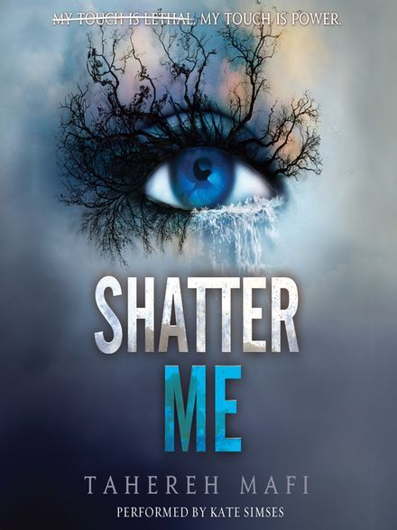

|  |
Shatter me series by Tahereh Mafi I have a curse.I have a gift I am a monster I'm more than human My touch is lethal My touch is power I am their weapon I will fight back Juliette hasn't touched anyone in exactly 264 days. The last time she did, it was an accident, but The Reestablishment locked her up for murder. No one knows why Juliette's touch is fatal. As long as she doesn't hurt anyone else, no one really cares. The world is too busy crumbling to pieces to pay attention to a 17-year-old girl. Diseases are destroying the population, food is hard to find, birds don't fly anymore, and the clouds are the wrong color. The Reestablishment said their way was the only way to fix things, so they threw Juliette in a cell. Now so many people are dead that the survivors are whispering war—and The Reestablishment has changed its mind. Maybe Juliette is more than a tortured soul stuffed into a poisonous body. Maybe she's exactly what they need right now. Juliette has to make a choice: Be a weapon. Or be a warrior. |
|
|
t is 1939. Nazi Germany. The country is holding its breath. Death has never been busier, and will be busier still. By her brother’s graveside, Liesel’s life is changed when she picks up a single object, partially hidden in the snow. It is The Gravedigger’s Handbook, left behind there by accident, and it is her first act of book thievery. So begins a love affair with books and words, as Liesel, with the help of her accordian-playing foster father, learns to read. Soon she is stealing books from Nazi book-burnings, the mayor’s wife’s library, wherever there are books to be found. But these are dangerous times. When Liesel’s foster family hides a Jew in their basement, Liesel’s world is both opened up, and closed down. In superbly crafted writing that burns with intensity, award-winning author Markus Zusak has given us one of the most enduring stories of our time. |